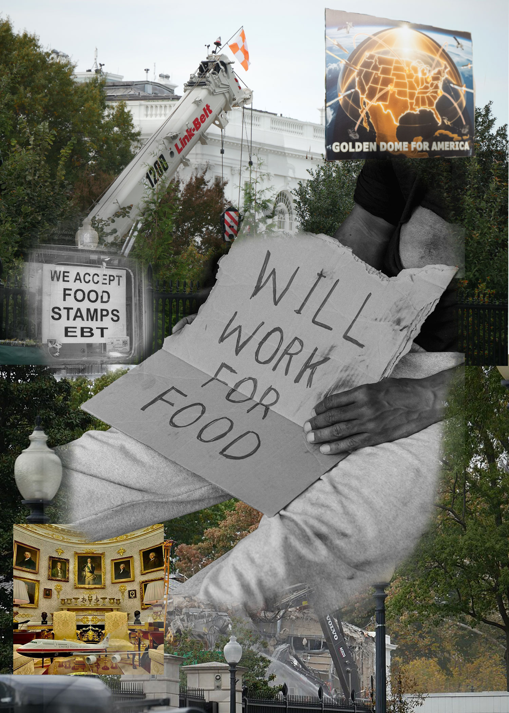
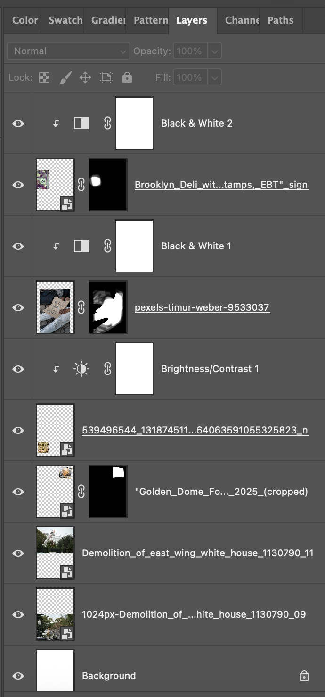
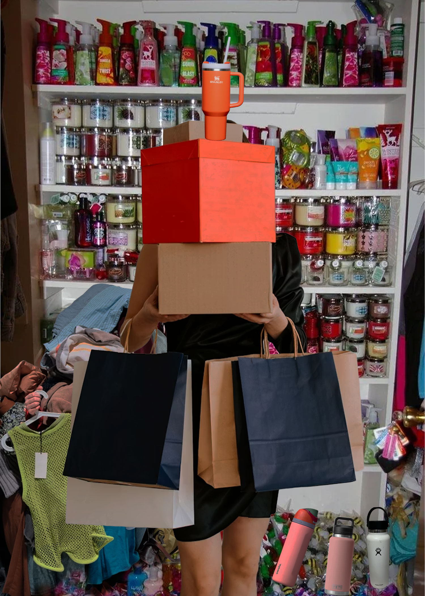
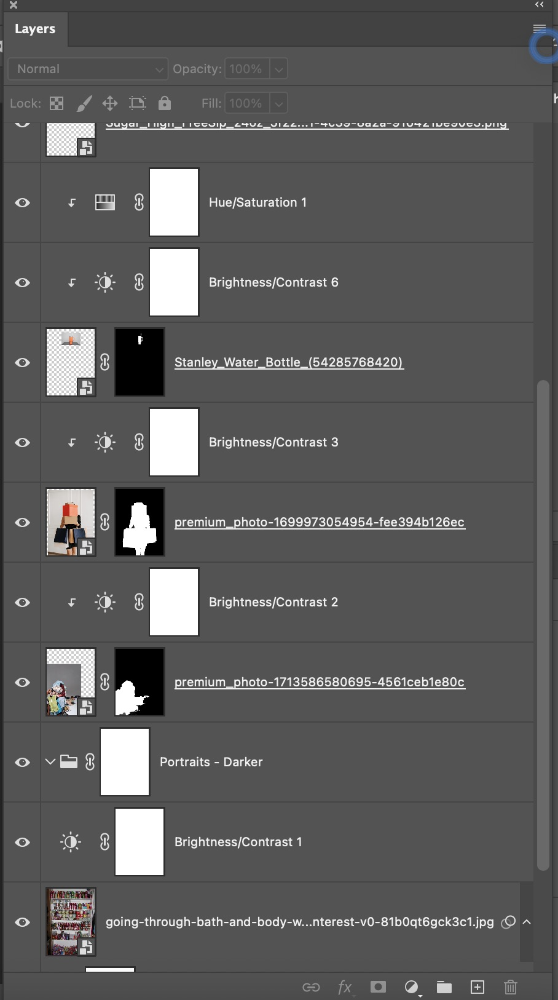

Homework 4 - Collage Draft
First Collage

Screenshot:

Second Collage

Screenshot:

Reflection
For my first collage I knew I wanted to create a political commentary since at the moment politics is something you can’t seem to escape. I used photos from different sources to create this image, such as wikimedia, pexels, and google. When I got to creating in photoshop I used mask layers and blending to combine the images together. I specifically left the destruction of the east wing of the White House, the new oval office, and golden dome in color to represent what the administration is pushing to the media. While ongoing issues such as unemployment, homelessness, and snap benefits paused, is still something that is ongoing in the country which shows where the people in power are putting their attention towards.
In my second image I wanted to make an image on overconsumption, I used many different sources to create this image such as wikimedia, pexel, unsplash, and google. I wanted to show how much some people are constantly consuming. In this society we are constantly being told we need the next best thing and what you just had is not “in” anymore. Although we realistically don’t need more. When working on this image I used layer masks and blending modes to try to make the different images look cohesive. I layered the stanley bottle on top of the boxes to show what is the new cool reusable bottle, while the other barely used bottles lay in the background. I blended the pile of clothes in the back and made sure to feature the top with the tag to represent overconsuming. In addition with the shelf of multiple unused Bath and Body Works products.